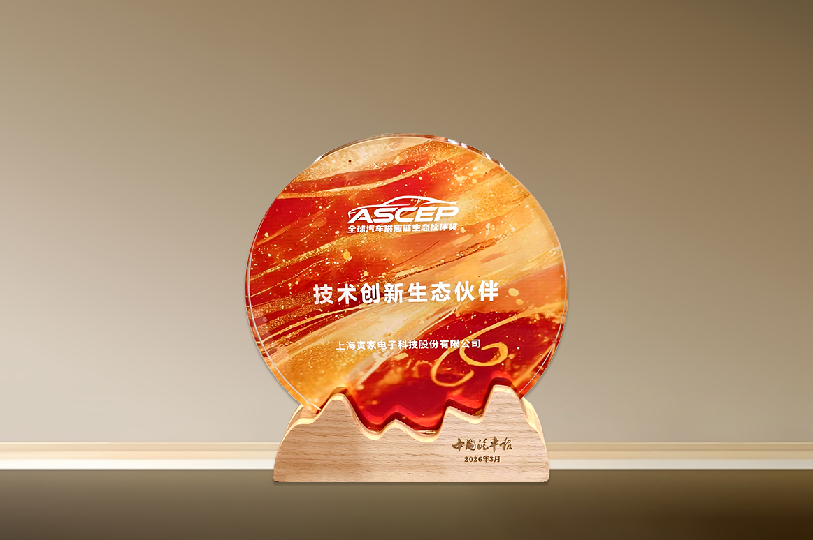

2026年3月13日，由中国能源汽车传播集团指导、《中国汽车报》社主办的2026汽车供应链生态伙伴大会在北京首都国际会展中心盛大启幕。在同期举办的全球汽车供应链生态伙伴盛典上，国家级专精特新“小巨人”企业寅家科技凭借全栈自研的技术体系，以及其在智能视觉感知、智能辅助驾驶及智能座舱领域的硬核技术，成功斩获技术创新生态伙伴奖。

自2013年成立以来，寅家科技始终坚守长期主义、自主创新，是国内较早实现全栈自研的企业之一。公司高度重视研发投入与技术积淀，已掌握200余项专利技术，成功筑牢企业核心技术壁垒，同时展现出强劲的技术成果转化能力。依托VT-Pilot®辅助驾驶、VT-Cockpit®智能座舱两大核心产品矩阵及VT-Camera智能视觉感知技术，寅家科技将全栈自研技术深度落地汽车产业应用场景，凭借硬核的技术实力与贴合市场的产品解决方案，同时覆盖乘用车和商用车领域。
当前，寅家科技服务于奥迪、奇瑞、一汽、东风、长安、丰田等主流车企，赢得中国市场认可，还与韩国KG Mobility等品牌携手，在海外市场展开合作，成为本土为数不多的兼具智能感知、智能辅助驾驶、智能座舱技术能力的出海供应商。
寅家科技研发副总裁彭宏伟表示：“感谢《中国汽车报》及各相关方对寅家技术实力的关注与认可！技术创新是寅家科技发展的核心引擎，我们始终坚持研发可落地、能切实服务市场的核心技术，同时高度重视研发人才的培养与孵化。目前，寅家科技集团研发人员占比接近三分之一。此次获奖，是权威媒体对寅家技术在汽车领域的高度肯定。近年来，我们也将自主研发的核心技术拓展至低空经济、具身智能等泛机器人领域，以更多元的技术布局赋能中国智造发展，助力打造更繁荣、更具创新活力的汽车供应链生态系统。”